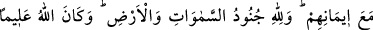
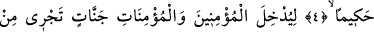
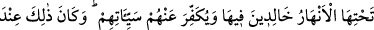
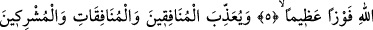
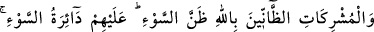
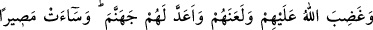
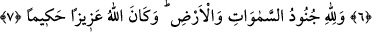

GÖKLERİN VE YERİN
ORDULARI ALLAH’INDIR
4. İmânlarını bir kat daha arttırsınlar diye müminlerin kalplerine güven indiren
O’dur. Göklerin ve yerin orduları Allah’ındır. Allah bilendir, her şeyi hikmetle
yapandır.
5. (Bütün bu lütuflar) mümin erkeklerle mümin kadınları, içinde ebedî
kalacakları, zemininden ırmaklar akan cennetlere koyması, onların günahlarını
örtmesi içindir. İşte bu, Allah katında büyük bir kurtuluştur.
6. (Bir de bunlar) Allah hakkında kötü zanda bulunan münâfık erkeklere ve
münâfık kadınlara, Allah’a ortak koşan erkeklere ve ortak koşan kadınlara azap
etmesi içindir. Müslümanlar için bekledikleri kötülük çemberi başlarına gelsin!
Allah onlara gadap etmiş, lânetlemiş ve cehennemi kendilerine hazırlamıştır. Orası
ne kötü bir yerdir!
7. Göklerin ve yerin orduları Allah’ındır. Allah azîzdir, hakîmdir.
“Sekîneti indiren O’dur” demekle, “fethin gerçekleşmesi hususunda mü’minlerin
gönüllerine sabır, metânet ve kararlılığı yerleştiren O’dur” denilmek istenmektedir.
Endişe ve çekinmenin arkasından anlaşma ve dolayısıyla güven duygusu mü’minlerin
kalbini ferahlatmıştır. Çünkü umreye niyetlendiklerinden onların savaş için hazırlıkları
yok denecek kadar azdı. Düşmanları ise mallarıyla ve var güçleriyle savaş hazırlığı
içindeydiler. Allah’ın lütfu sayesinde müslümanlar sebât edip, ölmek üzere bey’at
ettiler.
Kâşifî ve onun gibiler şöyle demiştir: “Hudeybiye sulhü sırasında sahâbe (r.a.)